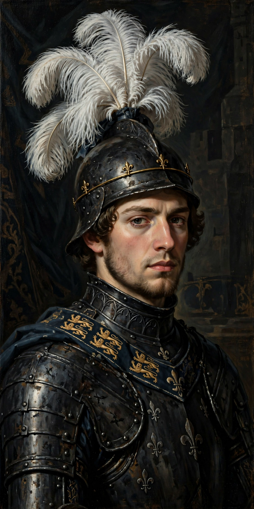

Edward of Woodstock (15 June 1330 – 8 June 1376), known to posterity as the Black Prince, was the eldest son and heir apparent of King Edward III of England. One of the most celebrated commanders of the Hundred Years' War, he won the battles of Crécy and Poitiers but died a year before his father, becoming the first English Prince of Wales never to become king.
 | |
| Born | 15 June 1330, Woodstock Palace, Oxfordshire |
|---|---|
| Died | 8 June 1376 (aged 45), Westminster Palace |
| Spouse | Joan, Countess of Kent |
| Issue | Richard II of England |
| Father | Edward III of England |
| Mother | Philippa of Hainault |
Created Duke of Cornwall in 1337 — the first English dukedom — and Prince of Wales in 1343, Edward commanded a division at the age of sixteen at the Battle of Crécy (1346), where his father's army, relying on longbowmen, destroyed the French host. The ostrich-feather badge and motto Ich dien ("I serve") associated with him were later adopted by Princes of Wales.
In 1355–56 the Prince led great mounted raids (chevauchées) across southern France, culminating in the Battle of Poitiers (19 September 1356), where his outnumbered army defeated and captured King John II of France. From 1363 he ruled the expanded principality of Aquitaine from Bordeaux, but his intervention in Castile for Pedro the Cruel (victorious at Nájera, 1367) bankrupted him and he contracted a chronic illness, probably dysentery, that never left him. The sack of Limoges (1370) blackened his reputation in French chronicles.
He returned to England in 1371 and died in 1376, leaving his young son to succeed Edward III as Richard II. He was buried in Canterbury Cathedral, where his tomb and heraldic achievements survive. The origin of the name "Black Prince" is uncertain; it is not recorded until the 16th century and may refer to his black shield or armour. His motto and feathers are still used by the Prince of Wales.
From Wikipedia, the free encyclopedia.